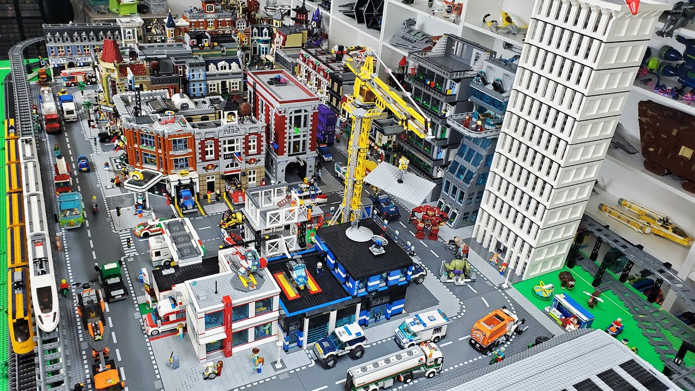

LEGO, Kamp ve Teknoloji Blogu
LEGO İle Yaratıcılığınızı Keşfedin
LEGO, hem çocuklar hem de yetişkinler için eşsiz bir yaratıcı aktivitedir. Birçok kişi, LEGO ile vakit geçirmenin sadece eğlenceli değil, aynı zamanda öğretici ve geliştirici olduğunu keşfetmiştir. LEGO setleri, bireylerin problem çözme yeteneklerini, el-göz koordinasyonunu ve mekansal farkındalıklarını geliştirmelerine yardımcı olur.
LEGO projeleri sadece eğlence amaçlı değil, aynı zamanda eğitim amaçlı da kullanılabilir. Örneğin, bir LEGO şehri inşa etmek, çocuklara temel mühendislik ve mimarlık prensiplerini öğretir. LEGO robotları ve makineleri ise, programlama ve mekanik hakkında temel bilgiler edinmeyi sağlar. LEGO ile yapılabilecek bazı projeler şunlardır:
- LEGO şehirleri ve binaları: Kendi LEGO şehrinizi inşa ederek hayal gücünüzü kullanabilirsiniz.
- LEGO robotları ve makineleri: LEGO Mindstorms kitleri ile programlanabilir robotlar yapabilirsiniz.
- LEGO sanat eserleri: Farklı renklerde ve şekillerde LEGO parçaları kullanarak sanat eserleri oluşturabilirsiniz.

LEGO projeleri hakkında daha fazla bilgi için LEGO Resmi Sitesi'ni ziyaret edebilirsiniz. Ayrıca, LEGO topluluklarına katılarak diğer LEGO meraklıları ile deneyimlerinizi paylaşabilirsiniz.
Kamp Yaparken Dikkat Edilmesi Gerekenler
Kamp yapmak, doğayla iç içe vakit geçirmenin ve günlük hayatın stresinden uzaklaşmanın en güzel yollarından biridir. Ancak, kamp yaparken bazı önemli noktalara dikkat etmek gerekir. Güvenli ve keyifli bir kamp deneyimi için şu adımları takip edebilirsiniz:
Öncelikle, güvenli bir kamp alanı seçmek çok önemlidir. Kamp alanının su kaynaklarına yakın olması, acil durumlar için bir avantajdır. Ayrıca, kamp alanının düz ve taşsız bir zemine sahip olması, çadır kurulumunu kolaylaştırır.
Yanınıza yeterli miktarda su ve yiyecek almak da bir diğer önemli noktadır. Kamp yaparken enerji ihtiyacınız artar, bu nedenle besleyici ve kolay taşınabilir gıdalar tercih etmelisiniz. Su ihtiyacınızı karşılamak için ise taşınabilir su filtreleri kullanabilirsiniz.
- Güvenli bir kamp alanı seçin: Kamp alanının su kaynaklarına ve düz bir zemine sahip olmasına dikkat edin.
- Yanınıza yeterli su ve yiyecek alın: Besleyici ve kolay taşınabilir gıdalar tercih edin.
- Doğaya zarar vermeyin ve çöplerinizi toplayın: Kamp alanınızı temiz tutarak doğal çevreyi koruyun.
Kamp malzemeleri ve ipuçları için Kamp Rehberi sitesini ziyaret edebilirsiniz. Ayrıca, kamp yaparken hava durumunu takip etmek ve uygun kıyafetler giymek de oldukça önemlidir.
Günlük Hayatınızı Kolaylaştıracak Teknolojik Cihazlar
Günümüzde teknoloji, hayatımızı kolaylaştıran ve daha verimli hale getiren birçok yenilik sunmaktadır. Akıllı telefonlardan ev otomasyon sistemlerine kadar, teknolojik cihazlar günlük rutinlerimizi daha yönetilebilir hale getirir. İşte günlük hayatınızı daha verimli hale getirecek bazı teknolojik cihazlar:
Akıllı telefonlar, iletişimden eğlenceye, işten sosyal medyaya kadar birçok alanda hayatımızın vazgeçilmez bir parçası olmuştur. İleri teknolojiyle donatılmış bu cihazlar, sadece arama yapmakla kalmaz, aynı zamanda internet tarayıcısı, kamera, oyun konsolu ve daha pek çok işlevi bir arada sunar.
Akıllı ev cihazları, ev otomasyonu sayesinde ev yaşamını daha konforlu ve güvenli hale getirir. Akıllı termostatlar, enerji tasarrufu yapmanıza yardımcı olurken, akıllı güvenlik kameraları evinizi güvende tutar. Akıllı ampuller ve sesli asistanlar ise evdeki işlerinizi kolayca yönetmenizi sağlar.
- Akıllı telefonlar: İletişim, eğlence ve iş için vazgeçilmez cihazlardır.
- Akıllı ev cihazları: Termostatlar, güvenlik kameraları ve sesli asistanlar gibi cihazlar ev yaşamını kolaylaştırır.
- Taşınabilir şarj cihazları: Seyahatlerinizde veya dışarıda olduğunuzda cihazlarınızı şarj etmenizi sağlar.
En yeni teknolojik cihazlar hakkında bilgi için Teknoloji Haberleri'ni takip edebilirsiniz. Teknoloji dünyasındaki gelişmelerle hayatınızı nasıl daha kolay hale getirebileceğinizi keşfetmek için bu kaynakları kullanabilirsiniz.